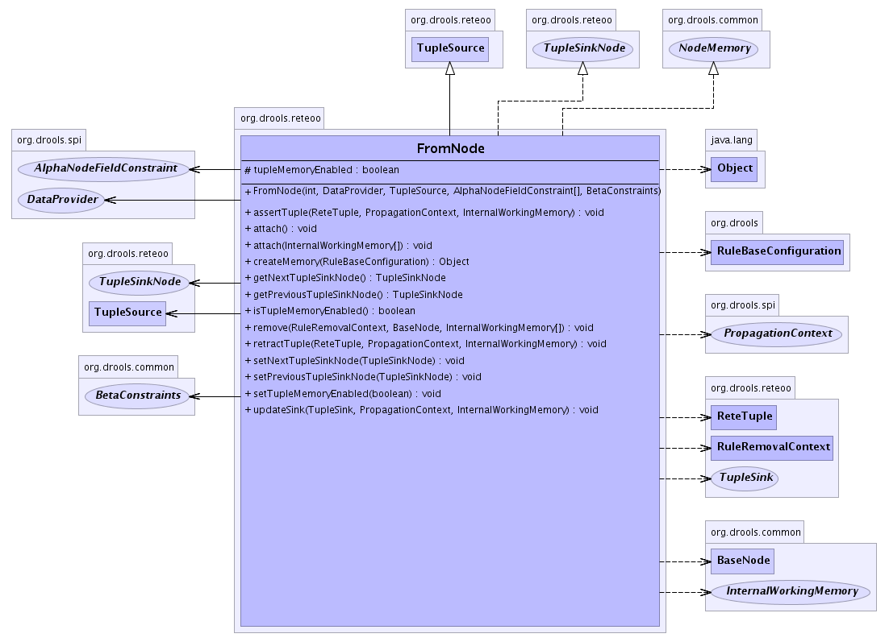

org.drools.reteoo
Class FromNode
java.lang.Object
 org.drools.common.BaseNode
org.drools.reteoo.TupleSource
org.drools.reteoo.FromNode
org.drools.common.BaseNode
org.drools.reteoo.TupleSource
org.drools.reteoo.FromNode
- All Implemented Interfaces:
- java.io.Serializable, NetworkNode, NodeMemory, TupleSink, TupleSinkNode
public class FromNode
- extends TupleSource
- implements TupleSinkNode, NodeMemory
- See Also:
- Serialized Form
-
- 
| Fields inherited from class org.drools.common.BaseNode |
id |
| Methods inherited from class java.lang.Object |
clone, equals, finalize, getClass, notify, notifyAll, wait, wait, wait |
tupleMemoryEnabled
protected boolean tupleMemoryEnabled
FromNode
public FromNode(int id,
DataProvider dataProvider,
TupleSource tupleSource,
AlphaNodeFieldConstraint[] constraints,
BetaConstraints binder)
assertTuple
public void assertTuple(ReteTuple leftTuple,
PropagationContext context,
InternalWorkingMemory workingMemory)
- Description copied from interface:
TupleSink
- Assert a new
ReteTuple.
- Specified by:
assertTuple in interface TupleSink
- Parameters:
leftTuple - The ReteTuple to propagate.context - The PropagationContext of the WorkingMemory actionworkingMemory - the WorkingMemory session.
retractTuple
public void retractTuple(ReteTuple leftTuple,
PropagationContext context,
InternalWorkingMemory workingMemory)
- Specified by:
retractTuple in interface TupleSink
attach
public void attach()
- Description copied from class:
BaseNode
- Attaches the node into the network. Usually to the parent
ObjectSource or TupleSource
- Specified by:
attach in class BaseNode
attach
public void attach(InternalWorkingMemory[] workingMemories)
- Specified by:
attach in class BaseNode
remove
public void remove(RuleRemovalContext context,
BaseNode node,
InternalWorkingMemory[] workingMemories)
- Description copied from class:
BaseNode
- Removes the node from teh network. Usually from the parent
ObjectSource or TupleSource
- Specified by:
remove in class BaseNode
updateSink
public void updateSink(TupleSink sink,
PropagationContext context,
InternalWorkingMemory workingMemory)
- Specified by:
updateSink in class TupleSource
createMemory
public java.lang.Object createMemory(RuleBaseConfiguration config)
- Specified by:
createMemory in interface NodeMemory
isTupleMemoryEnabled
public boolean isTupleMemoryEnabled()
- Specified by:
isTupleMemoryEnabled in interface TupleSink
setTupleMemoryEnabled
public void setTupleMemoryEnabled(boolean tupleMemoryEnabled)
- Specified by:
setTupleMemoryEnabled in interface TupleSink
getNextTupleSinkNode
public TupleSinkNode getNextTupleSinkNode()
- Returns the next node
- Specified by:
getNextTupleSinkNode in interface TupleSinkNode
- Returns:
- The next TupleSinkNode
setNextTupleSinkNode
public void setNextTupleSinkNode(TupleSinkNode next)
- Sets the next node
- Specified by:
setNextTupleSinkNode in interface TupleSinkNode
- Parameters:
next - The next TupleSinkNode
getPreviousTupleSinkNode
public TupleSinkNode getPreviousTupleSinkNode()
- Returns the previous node
- Specified by:
getPreviousTupleSinkNode in interface TupleSinkNode
- Returns:
- The previous TupleSinkNode
setPreviousTupleSinkNode
public void setPreviousTupleSinkNode(TupleSinkNode previous)
- Sets the previous node
- Specified by:
setPreviousTupleSinkNode in interface TupleSinkNode
- Parameters:
previous - The previous TupleSinkNode